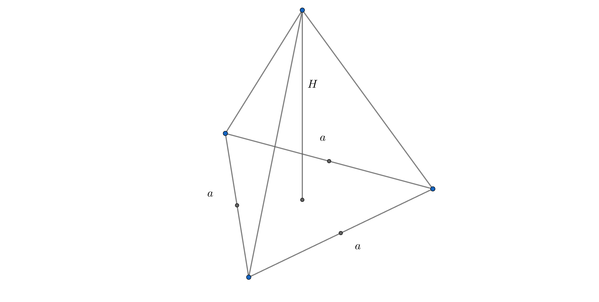
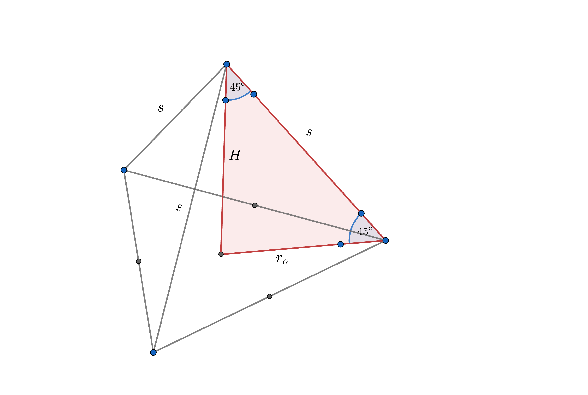

Zapremina pravilne trostrane piramide
🎯 Ciljevi lekcije
Posle ove lekcije ćeš znati:
- Kako izračunati zapreminu pravilne trostrane piramide
- Kako primeniti formulu \( V = \frac{1}{3} \cdot B \cdot H \) na konkretnim zadacima
- Kako iz datih podataka izračunati visinu piramide
Kako se računa zapremina pravilne trostrane piramide
Zapremina pravilne trostrane piramide računa se kao trećina proizvoda površine baze i visine piramide.
Površina baze
Osnova pravilne trostrane piramide je jednakostranični trougao. Površina jednakostraničnog trougla može se izračunati pomoću formule:
$$ B = \frac{a^2 \sqrt{3}}{4} $$
a - dužina stranice jednakostraničnog trougla.
Ukupna zapremina piramide
Zapremina pravilne trostrane piramide se računa:
$$ V = \frac{(B \cdot H)}{3} $$
\( H \) - visina piramide
Zadaci:
1
Izračunaj zapreminu pravilne trostrane piramide ako joj je obim osnove \( 36 \,
\text{cm} \), a visina je \( \frac{2}{3} \) dužine osnovne ivice.

$$O_{\text{osnove}} = 36\,\text{cm}$$
$$H = \frac{2}{3} \cdot a$$
$$V = ?$$
$$O_{\text{osnove}} = 3 \cdot a$$
$$3 \cdot a = 36\,\text{cm}$$
$$a = 12\,\text{cm}$$
$$H = \frac{2}{3} \cdot 12 = 8\,\text{cm}$$
$$V = \frac{1}{3} \cdot B \cdot H$$
$$V = \frac{1}{3} \cdot \frac{a^2 \sqrt{3}}{4} \cdot H$$
$$V = \frac{1}{3} \cdot \frac{144 \sqrt{3}}{4} \cdot 8$$
$$V = 96 \sqrt{3}\,\text{cm}^3$$
2
Dužina osnovne ivice pravilne trostrane piramide je \( 12 \, \text{cm} \). Izračunati
zapreminu te piramide, ako je mera ugla između bočne ivice i ravni osnove \( 45^\circ
\).

$$a = 12\,\text{cm}$$
$$V = ?$$
$$H = r_{\text{o}}$$
$$r_{\text{o}} = \frac{a \sqrt{3}}{3} = \frac{12 \sqrt{3}}{3} = 4
\sqrt{3}\,\text{cm}$$
$$H = 4 \sqrt{3}\,\text{cm}$$
$$V = \frac{1}{3} \cdot B \cdot H$$
$$V = \frac{1}{3} \cdot \frac{a^2 \sqrt{3}}{4} \cdot H$$
$$V = \frac{1}{3} \cdot \frac{144 \sqrt{3}}{4} \cdot 4 \sqrt{3}$$
$$V = 144\,\text{cm}^3$$
📝 Rezime lekcije
- Površina baze: \( B = \frac{a^2 \sqrt{3}}{4} \)
- Zapremina: \( V = \frac{1}{3} \cdot B \cdot H = \frac{1}{3} \cdot \frac{a^2 \sqrt{3}}{4} \cdot H \)
- Ključ je da iz datih podataka se prvo izračuna stranica \( a \) i visina \( H \), a zatim primeni formula.